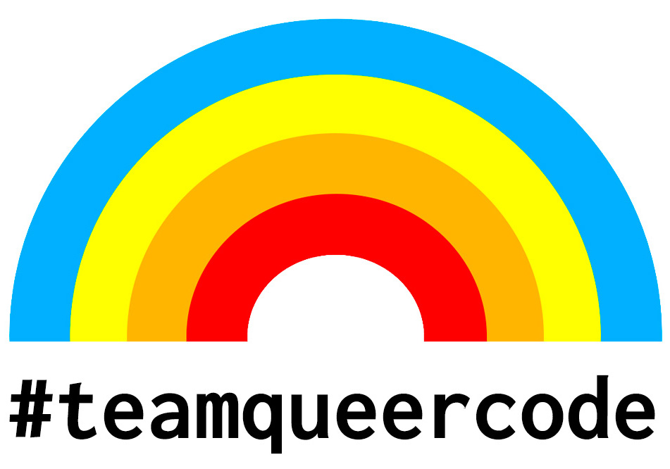

Code of Conduct
When Something Happens
If you see a Code of Conduct violation, follow these steps:
- Let the person know that what they did is not appropriate and ask them to stop and/or edit their message(s).
- That person should immediately stop the behavior and correct the issue.
- If this doesn’t happen, or if you’re uncomfortable speaking up, contact admins.
- As soon as available, an admin will join, identify themselves, and take further action (see below), starting with a warning, then temporary deactivation, then long-term deactivation.
When reporting, please include any relevant details, links, screenshots, context, or other information that may be used to better understand and resolve the situation.
The Admin team will prioritize the well-being and comfort of the recipients of the violation over the comfort of the violator.
Our Pledge
In the interest of fostering an open and welcoming environment, we as members of the #teamqueercode community pledge to making participation in our community a harassment-free experience for everyone, regardless of age, body size, disability, ethnicity, gender identity and expression, level of experience, technical preferences, nationality, personal appearance, race, religion, or sexual identity and orientation.
Our Standards
Examples of behavior that contributes to creating a positive environment include:
- Using welcoming and inclusive language.
- Being respectful of differing viewpoints and experiences.
- Gracefully accepting constructive feedback.
- Focusing on what is best for the community.
- Showing empathy and kindness towards other community members.
- Attempting collaboration before conflict.
- Alerting community admins if you notice a dangerous situation, someone in distress, or unresolved violations of this Code of Conduct.
Examples of unacceptable behavior by participants include:
- The use of sexualized language or imagery and unwelcome sexual attention or advances, including when simulated online. The only exception to sexual topics is channels/spaces specifically for topics of sexual identity.
- Trolling, insulting/derogatory comments, and personal or political attacks.
- Public or private harassment, deliberate intimidation, or threats.
- Publishing others’ private information, such as a physical or electronic address, without explicit permission. This includes any sort of “outing” of any aspect of someone’s identity without their consent.
- Publishing screenshots or quotes, especially from identity channels, without all quoted users’ explicit consent.
- Publishing or telling others that a member belongs to a particular identity channel without asking their consent first.
- Publishing of non-harassing private communication.
- Any of the above even when presented as “ironic” or “joking”.
- Any attempt to present “reverse-ism” versions of the above as violations. Examples of reverse-isms are “reverse racism”, “reverse sexism”, “heterophobia”, and “cisphobia”.
- Unsolicited explanations under the assumption that someone doesn’t already know it. Ask before you teach! Don’t assume what people’s knowledge gaps are.
- Feigning or exaggerating surprise when someone admits to not knowing something.
- “Well-actuallies”
- Other conduct which could reasonably be considered inappropriate in a professional or community setting.
Scope
This Code of Conduct applies both within community spaces and in other spaces involving the community. This includes the #teamqueercode Slack, its Twitter community, private email communications in the context of the community, and any events where members of the community are participating, as well as adjacent communities and venues affecting the community’s members.
Depending on the violation, the admins may decide that violations of this code of conduct that have happened outside of the scope of the community may deem an individual unwelcome, and take appropriate action to maintain the comfort and safety of its members.
Admin Enforcement
Once the admins get involved, they will follow a documented series of steps and do their best to preserve the well-being of #teamqueercode members. This section covers actual concrete steps. For further information/details on values and practices that admins will generally apply when enforcing the Code of Conduct, refer to the full enforcement document.
Contacting Admins